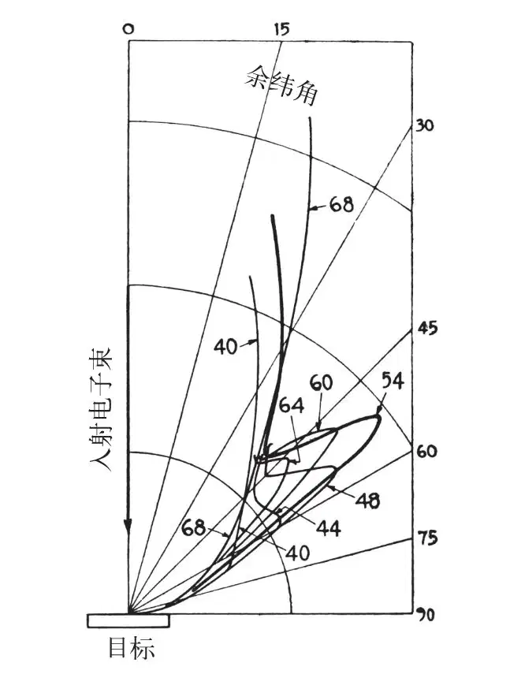
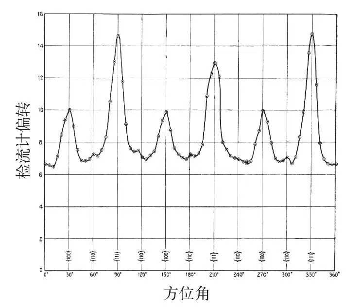
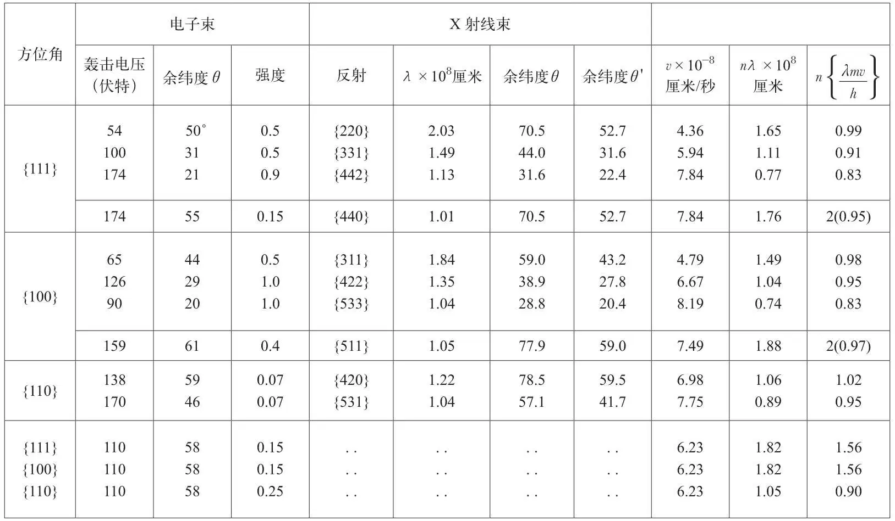

英文
英文戴维森，革末
编者按
1924年，路易斯·德布罗意在他的博士论文中猜测，电子以及其他一些有质量的粒子的运动方式可能与波类似，就像光子除了具有电磁辐射的波动行为以外，还显示出与此不同的粒子行为。这一假说意味着，物质粒子会表现出干涉或者衍射这样的波动特征。在这篇文章中，贝尔电话实验室的克林顿·戴维森和莱斯特·革末通过对从镍晶中发出的电子束的衍射效应进行测量证实了这一假说。如果正如德布罗意猜想的那样电子具有像波一样的性质，那么根据镍晶中已知的原子平面之间的间距，他们就能计算出应该出现衍射束的预期角度。实验结果与这些预测是相吻合的。戴维森因此获得了1937年的诺贝尔物理学奖。 英文
现在正在进行的一系列实验中，我们用一窄束电子垂直轰击一块从镍单晶上切下来的靶子，并测量了靶前方不同方向上的电子散射强度（与每单位立体角中速度和轰击电子的速度相似的电子数量）。我们的实验装置可以测量从赤道（靶平面）到与轴（入射束）成20°范围内在任意纬度处和在任意方位角上的散射强度。 英文
被切割下来的靶面平行于镍单晶点阵的一组{111}面，切下来之后用蒸气进行蚀刻，以使其表面形成一系列{111}小晶面。轰击的电子束打在约2平方毫米的范围内，并与以上的小晶面垂直。 英文
沿着入射电子束的方向观察，我们发现原子在晶体中的排列呈现三重对称。从晶体出发，在纬度为35°处有三条相隔同样方位角的{100}法线，并且在这些方位角中间，有三条{111}法线出现在纬度20°处。为了方便起见，任何一条{100}法线的方位角都可以被看作是一个{100}方位角，任何一条{111}法线的方位角也可以被看作是一个{111}方位角。我们还必须指定第三组方位角；它将平分相邻的{100}方位角和{111}方位角之间的二面角，并且包含一条位于靶平面上的{110}法线。有6个这样的方位角，它们当中的任意一个都可以被看作是一个{110}方位角。考虑到对称性的要求，当我们从{100}方位角转到下一个相邻的{111}方位角（60°）时，如果散射强度的变化依赖于方位角的话，那么当我们从60°转到下一个相邻的{100}方位角时，相同的依赖关系会按相反的次序再现。散射强度对方位角的依赖关系肯定是一个周期为2π/3的偶函数。 英文
一般来说，如果轰击电压和方位角固定，当沿着纬度测量的时候，不会观察到任何令人惊奇的现象。散射强度连续而有规律地从靶平面处的零增加到余纬20°时的最大值，余纬20°是我们的观测极限。如果轰击电压和余纬固定，而沿着方位角进行探测，则通常可以观察到预期之中的散射强度变化，但总的来说这种差别很小，在某些情况下总的变化量不会大于平均强度的百分之几。这就是散射在轰击电压从15伏特到接近40伏特之间变动时的特性。 英文
当电压为40伏特时，在方位角为{111}的余纬曲线上接近60°处出现了一个小峰。随着电压的增加，这个峰迅速变大形成一个很强的尖峰，同时朝着入射电子束的方向缓慢向上提升。当轰击电压为54伏特，余纬为50°时，峰值达到最大，然后强度逐渐减小，在电压约为66伏特，余纬为45°时消失。图1描述了这个尖峰从增大到衰减的过程。 英文

图1．不同轰击电压下电子散射强度随余纬角的变化——方位角{111}-330° 英文
在最大值处穿过这个尖峰的方位角截面图（图2之方位角330°）表明，它以方位角为变量的时候和以纬度为变量的时候一样尖锐，并且，如我们所料，它形成了3个尖峰组合中的一个。这些尖峰的宽度在随方位角变化和随纬度变化时都较大，几乎可以肯定地说这是由测量仪器的低分辨率造成的。尖峰是由散射的电子束引起的，对这些散射电子束的界定即使不能像对原射线束的界定那样精确，至少也能相差不多。在{100}方位角上出现的次级峰是另一组类似的尖峰，它们在余纬44°，轰击电压65伏特时达到最大值。 英文

图2．电子散射强度随方位角的变化——54伏特，余纬50° 英文
电压在从15~200伏特的范围内变动时，我们在主方位角方向发现了13组与上面所描述的电子束类似的射束。结果见表I左侧（第1～4列）。考虑到“背景散射”随角度的变化，以及晶面法线与入射电子束之间的角位移，我们对观察到的余纬角进行了微小的修正。 英文
表I

如果入射电子束被一束波长可调的单色X射线取代，我们当然可以观察到非常类似的现象。当波长为一些特定值时，在靶的入射面一侧就会出现3条一组或6条一组的衍射光束。表I右侧（第5、6、7列）列出了在我们能观测到的角度范围内由波长最长的10组X射线束得到的数据。前10组中每组数据都来自我们先前设定的3个主方位角中的一个。 英文
在以上表中关于电子束和X射线束的两部分数据中有几点关系值得我们注意。同时还要注意两个区别：电子束的余纬角不是X射线束的余纬角；对于表格底部列出的3行电子束数据，没有X射线束数据与之对应。 英文
第一个区别是系统上的，可以用一种简单的方式定量地总结出来。如果晶体沿着入射束方向被压缩至70%，即压缩因子为0.7，那么X射线束将移至更小的余纬角θ'（第8列），这样它的位置将与观测到的电子束的情况精确地吻合——平均差异为1.7°。同理，对于我们能观察到的前10组X射线束中的每一个，都存在一组电子束与之对应，只有110伏特的电子束不能应用这种方法。 英文
当然，这些结果完全证实了波动力学理论的基本观点，我们自然很想知道，与电子束相关联的X射线束的波长是否就是德布罗意所说的h/mv。也许不用假设X射线束和电子束之间的特定关系，也不用使用压缩因子，我们就可以作出比较。所有的X射线束都满足光栅公式nλ = dsinθ，这与压缩因子完全不相干，在这个公式中，d是位于晶体表面的原子行或列的间距——这些行列都垂直于我们粒子束所在的方位角平面。对于方位角{111}和方位角{100}，d = 2.15×10–8厘米；对于方位角{110}，d = 1.24×10–8厘米。我们可以把这个公式应用于电子束中而无需考虑支配电子束沿余纬度分布情况的因素。用这种方式得到的波长和电子速度v之间的关系列于表I的最后3列中。 英文
至于在最后一列中列出的计算值n(λmv/h)，我们可能应该不考虑表格底部110伏特的电子束数据，因为我们已经有理由把这些电子束看作是异常情况。对于其他电子束，n(λmv/h)值趋向于一个比较小的整数，与波动力学理论预言的现象十分吻合。使用压缩因子对电子束和X射线束之间的差别进行校正之后，也得到了预想的结果，即整数1和2。对整数的偏离可能主要是由系统特性造成的。我们认为误差来自入射束不严格准直或者仪器的其他结构缺陷。最大的偏离出现在我们能观察到的余纬度极限附近，那里的数据是最不可靠的。 英文
（王静 翻译；赵见高 审稿）